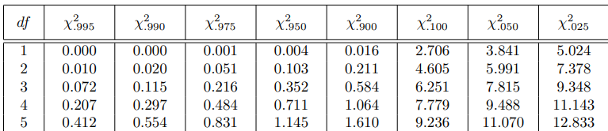

Türchen 8: Hardy-Weinberg-Equilibrium
Heii, wir wollen heute schauen ob eine Population im Hardy-Weinberg Gleichgewicht ist. Dafür habe ich mal diese Population vorgegeben mit den zwei Allelen "A" und "a":
AA_count = 795
Aa_count = 190
aa_count = 15
Um richtig zu starten brauchen wir die relativen Häufigkeiten und damit gehts dann auf der nächsten page los, das berechnen kriegst du safe hin :)
Hardy-Weinberg - Seite 2
Lösung:
total = AA_count + Aa_count + aa_count
freq_AA = AA_count / total
freq_Aa = Aa_count / total
freq_aa = aa_count / total
juppp super, als nächstes können wir die Allelfrequenzen p (Häufigkeit von A) und q (Häufigkeit von a) berechnen. Hast du einen Idee wie man das machen könnte? Ein Tipp wäre es jeweils 50% der Häufigkeit von "Aa" zu benutzen.
Hardy-Weinberg - Seite 3
Lösung:
# Möglichkeit 1
p = freq_AA + 0.5 * freq_Aa
q = freq_aa + 0.5 * freq_Aa
# Möglichkeit 2
p = (2 * AA_count + Aa_count) / (2 * total)
q = 1 - p
Mithilfe dieser beiden Häufigkeiten können wir jetzt die Erwarteten Häufigkeiten als Absolute Zahlen bestimmen. Die Berechnung kriegst du auch easy hin, die Formeln dafür sind jeweils (p^2), (2*p*q) und (q^2) mal dem total value.
Hardy-Weinberg - Seite 4
Lösung:
expected_AA = total * p^2
expected_Aa = total * 2 * p * q
expected_aa = total * q^2
okk, jetzt haben wir schon alles um den chi^2 Wert zu berechnen, er entspricht: Σ((Beobachtet - Erwartet)^2 / Erwartet)
Hardy-Weinberg - Seite 5
Lösung:
chi_square = ((AA_count - expected_AA)^2 / expected_AA) +
((Aa_count - expected_Aa)^2 / expected_Aa) +
((aa_count - expected_aa)^2 / expected_aa)
geschafft, i guess wobei eigentliche noch was fehlt, bei Statistischen-Tests/Hypothesentests setzt man eigentlich bevor man startet immer ein Signifikanzniveau vor (meistens 5% also 0.05) bzw. noch eine Nullhypothese die je nachdem wie unsere Wert ausfällt, abgelehnt wird.
In unseren Fall ist unsere Nullhypothese: "Unsere Population ist im Gleichgewicht". Falls der Chi^2 Wert kleiner ist als für das entsprechende Signifikanzniveau also bei uns wenn wir in der Tabellen schauen 3.841, können wir diese Hypothese nicht ablehnen (0.877 < 3.841) und somit befindet sich unsere Population im Gleichgeweicht. juppp, das wars schon wieder tschauuuu :]